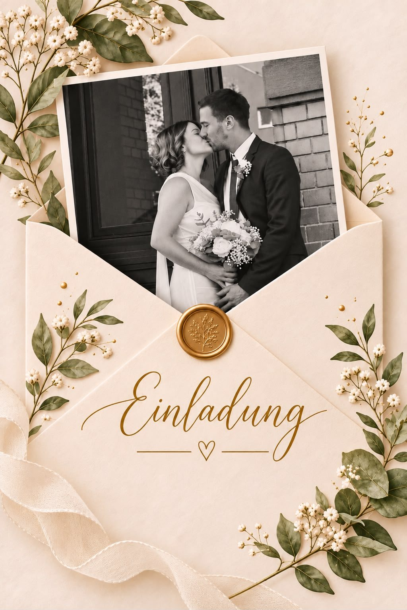
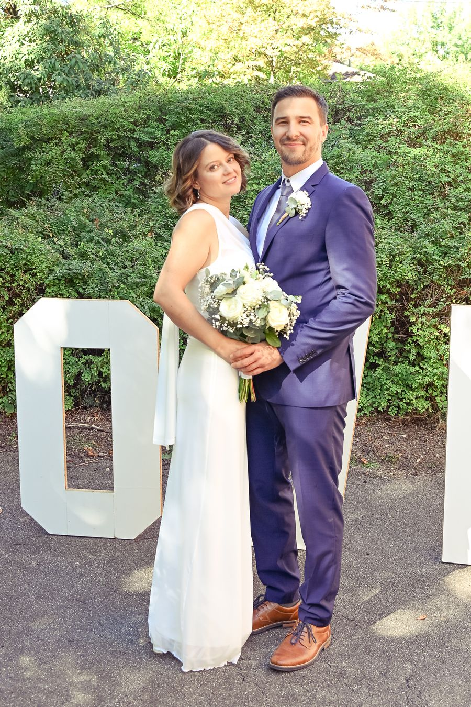
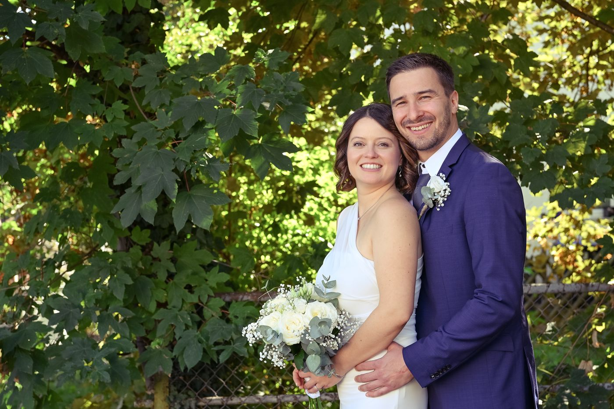

Wann & Wo
Der große Tag
Datum
Samstag,
25. September 2027
Uhrzeit
14:30 Uhr
Beginn der freien Trauung


Um Antwort wird gebeten
Feiert ihr mit uns?
Bitte gebt uns bis zum 1. Februar 2027 Bescheid, ob ihr dabei seid.
Vorschau: Diese Antwort wurde nicht gespeichert. Gespeichert wird, sobald die Seite online ist.